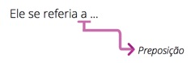
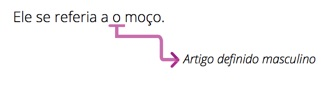
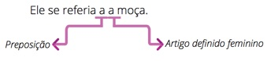
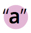
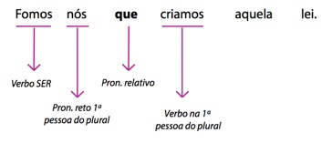
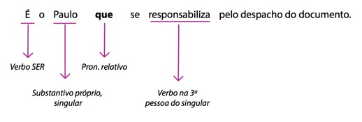

Olá! Chegamos ao final da jornada!
Como disse na apresentação deste curso, o estudo da oração adjetiva seria feito para que a sua prática de escrita melhorasse. É claro que não podemos ignorar por completo nomenclaturas, mas nossa intenção aqui foi reduzir ao mínimo a decoreba e desenvolver mais a sensibilidade para a interpretação do texto de acordo com pequenas mudanças nas estruturas das orações adjetivas.
Por isso, nesta derradeira aula, vamos raciocinar e praticar. Faremos algumas análises de pequenos problemas no texto que poderão ser resolvidos com o conhecimento adquirido ao longo deste curso. Com isso, você vai treinar sua audição e sua visão para identificar, com maior agilidade, defeitos e soluções para sua escrita.
Ao trabalho!
6.1 Uma síntese para facilitar
Como, para resolver problemas com maior celeridade, precisamos acessar alguns instrumentos rapidamente, segue uma síntese de todas as informações apresentadas neste curso.
Frase: Todo enunciado suficiente por si mesmo para estabelecer comunicação.
Oração: Estrutura sintático-semântica cujo termo central é o verbo.
Período: Frase constituída por uma ou mais orações.
Período simples: Frase constituída por apenas uma oração, chamada de absoluta.
Período composto: Frase constituída por mais de uma oração.
Período composto por coordenação: Frase constituída por orações independentes sintaticamente entre si.
Período composto por subordinação: Frase constituída por orações dependentes sintaticamente entre si. As orações subordinadas podem ser substantivas, adverbiais ou adjetivas.
Oração subordinada adjetiva: Qualifica um termo presente na oração principal. Exerce função sintática típica de um adjetivo.
Oração subordinada adjetiva restritiva: Restringe o conceito do termo ao qual ela se refere, cria um subgrupo desse termo. NUNCA é precedida por vírgulas.
Oração subordinada adjetiva explicativa: Explica o termo que a antecede. SEMPRE é precedida por vírgula.
Pronome relativo: Substitui na oração adjetiva um termo da oração principal. São eles: que, o qual, cujo, onde, quando, quanto, quem.
Oração adjetiva desenvolvida: Apresenta sempre pronome relativo e verbo flexionado em modo e tempo.
Oração adjetiva reduzida: Não apresenta pronome relativo e seu verbo está flexionado no infinitivo, no gerúndio ou no particípio.
Fixando esses conceitos, vamos à prática!
6.2 Dois vilões do texto
Você já deve ter passado pela sensação de ler um texto com facilidade, como se estivesse vendo tudo muito claramente, não é mesmo? Por outro lado, já deve ter lido e relido algum trecho porque simplesmente ele não consegue entrar na sua cabeça! Provavelmente você atribuiu a isso uma inabilidade sua. Mas sabia que às vezes o problema está no texto e não em você?
Geralmente, quando redigimos, não nos focamos na forma, mas na mensagem. Queremos passar para o papel o que estamos pensando. Essa despreocupação inicial é necessária, sob pena de termos um bloqueio criativo. Mas é fundamental que, no momento seguinte à produção do texto, haja o momento da leitura e reescritura. Não existe texto bom redigido de primeira. Exemplo disso é um manuscrito de Lima Barreto, romancista brasileiro do início do século XX, encontrado na Biblioteca Nacional.
Outro exemplo de que fazer e refazer é tarefa rotineira para verdadeiros artistas está nas obras de Leonardo Da Vinci, que costumava produzir vários esboços até alcançar o que considerava ser o produto final. Exemplo desse processo pode ser percebido no retrato de Isabella d’Este, atribuído ao pintor.
Toda obra precisa ser feita e refeita para adquirir a perfeição. E, em se tratando de textos produzidos no STF, sejam eles administrativos, sejam jurídicos, essa perfeição está na clareza e na objetividade.
Nesse caso, existem alguns vilões comumente percebidos. Não se trata de erro gramatical, mas da melhor opção estilística para a clareza e compreensão na mensagem. Como nosso curso é focado nas orações adjetivas, abordaremos os quatro mais conflituosos: eco, “queísmo”, crase antes de a qual/as quais e concordância verbal com pronome que e quem.
6.2.1 Resolvendo o eco
Como já foi dito na aula anterior, o eco é a rima gerada por repetições excessivas de alguns sons no final das palavras.
Em letras de músicas, temos exemplos desse fenômeno. Veja os trechos destacados na canção “Linha do Equador” (Djavan e Caetano Veloso).
Em textos como esse, o eco é intencional e ajuda a compor a poesia. Todavia, nas demais formas de escrita, as repetições prejudicam a qualidade do texto.
No caso abaixo, vamos ter muitas ocorrências de “al”:
Constitui ilegalidade reparável pela via do habeas corpus fazer com que alguém responda pelo exercício ilegal de uma profissão que ainda não foi regulamentada. (...) Condição sem a qual fica inviabilizado, neste caso concreto, o manejo da ação penal com base no art. 47 da LCP, por se tratar de norma penal em branco, que depende da indicação de lei que estabeleça as condições para o exercício de determinada atividade.
Para resolver esse eco, poderíamos trocar o pronome relativo “a qual” para “que”, mas o texto ficaria muito estranho:
Condição sem que fica inviabilizado, neste caso
concreto, o manejo da ação penal...
Melhor seria desfazer a oração adjetiva:
Sem essa condição, fica inviabilizado...
Constitui ilegalidade reparável pela via do habeas corpus fazer com que alguém responda pelo exercício ilegal de uma profissão que ainda não foi regulamentada. (...) Sem essa condição, fica inviabilizado, neste caso concreto, o manejo da ação penal com base no art. 47 da LCP, por se tratar de norma penal em branco, que depende da indicação de lei que estabeleça as condições para o exercício de determinada atividade.
Veja mais um exemplo:
A ausência pessoal do acusado, salvo se a legislação aplicável à espécie assim expressamente o exigisse, não compromete o exercício daquela função pelo profissional da advocacia, razão pela qual neste fato não se caracteriza qualquer espécie de infração aos direitos processuais constitucionais da ampla defesa ou do contraditório.
Nesse caso, a troca do pronome relativo “a qual” por “que” já resolveria tudo:
A ausência pessoal do acusado, salvo se a legislação aplicável à espécie assim expressamente o exigisse, não compromete o exercício daquela função pelo profissional da advocacia, razão por que neste fato não se caracteriza qualquer espécie de infração aos direitos processuais constitucionais da ampla defesa ou do contraditório.
 Agora tente você:
Agora tente você:
- Reduza o eco substituindo o pronome relativo por outro equivalente:
- Ao considerar a amplitude do acesso ao sítio virtual no qual as imagens foram divulgadas, estaria caracterizada a internacionalidade do dano produzido ou potencial.
- O art. 90 da Lei 9.099/95 determina que as disposições da Lei dos Juizados Especiais não são aplicáveis aos processos penais nos quais a fase de instrução já tenha sido iniciada.
Agora tente você:
- Reduza o eco substituindo o pronome relativo por outro equivalente:
- Ao considerar a amplitude do acesso ao sítio virtual no qual as imagens foram divulgadas, estaria caracterizada a internacionalidade do dano produzido ou potencial.
- O art. 90 da Lei 9.099/95 determina que as disposições da Lei dos Juizados Especiais não são aplicáveis aos processos penais nos quais a fase de instrução já tenha sido iniciada.
Agora tente você:
Resposta
- Ao considerar a amplitude do acesso ao sítio virtual onde as imagens foram divulgadas, estaria caracterizada a internacionalidade do dano produzido ou potencial.
- O art. 90 da Lei 9.099/95 determina que as disposições da Lei dos Juizados Especiais não são aplicáveis aos processos penais em que a fase de instrução já tenha sido iniciada.
6.2.2 Resolvendo o “queísmo”
Outro problema muito comum e mais perigoso em textos é a repetição excessiva de “que”. Por esse termo ter várias classes gramaticais, acaba sendo usado como um coringa. Mas seu excesso, além de cansar o leitor, pode gerar ambiguidades. Veja o trecho a seguir:
A ideia-força que orienta os julgados desta Corte é a de que o exame criminológico pode subsidiar as decisões do juiz das execuções criminais, que, é bom que se diga, não estará adstrito ao laudo técnico, podendo valorá-lo, a partir dos demais elementos que instruem os autos de execução criminal.
Nesse texto, nem todo “que” é pronome relativo. Entretanto, você já é capaz de identificar os que são. Com os recursos que possui, você resolverá o problema do eco. Mas, para isso, é bom seguir alguns passos:
Exemplo I
- Destaque as orações adjetivas iniciadas pelo pronome “que”:
A ideia-força que orienta os julgados desta Corte é a de que o exame criminológico pode subsidiar as decisões do juiz das execuções criminais, que, é bom que se diga, não estará adstrito ao laudo técnico, podendo valorá-lo, a partir dos demais elementos que instruem os autos de execução criminal.
- Analise se é possível transformar o verbo da oração adjetiva em adjetivo ou transformar a oração desenvolvida em reduzida:
Que orienta os julgados desta Corte orientadora dos julgados desta Corte
Que instruem os autos de execução criminal instrutores dos autos de execução criminal
- Veja se é necessário e possível mudar o pronome relativo das demais orações adjetivas evitando novos ecos ou ambiguidades:
Que não estará adstrito ao laudo técnico o qual não estará adstrito ao laudo técnico.
- Combine as variáveis até que o texto fique estilisticamente harmônico:
A ideia-força orientadora dos julgados desta Corte é a de que o exame criminológico pode subsidiar as decisões do juiz das execuções criminais, o qual, é bom que se diga, não estará adstrito ao laudo técnico, podendo valorá-lo, a partir dos demais elementos instrutores dos autos de execução criminal.
Melhorou bastante, não foi?
Agora vamos a mais um exemplo:
Exemplo II
O postulado da dignidade da pessoa humana, que representa significativo vetor interpretativo, verdadeiro valor-fonte que conforma e inspira todo o ordenamento constitucional vigente em nosso País, traduz, de modo expressivo, um dos fundamentos em que se assenta, entre nós, a ordem republicana e democrática que o sistema de direito constitucional positivo consagrou. (...) O princípio constitucional da busca da felicidade, que decorre, por implicitude, do núcleo de que se irradia o postulado da dignidade da pessoa humana, assume papel de extremo relevo no processo de afirmação, gozo e expansão dos direitos fundamentais (...).
Seguindo as etapas descritas no exemplo anterior, teremos:
- Destaque as orações adjetivas iniciadas pelo pronome “que”:
O postulado da dignidade da pessoa humana, que representa significativo vetor interpretativo, verdadeiro valor-fonte que conforma e inspira todo o ordenamento constitucional vigente em nosso País, traduz, de modo expressivo, um dos fundamentos em que se assenta, entre nós, a ordem republicana e democrática que o sistema de direito constitucional positivo consagrou. (...) O princípio constitucional da busca da felicidade, que decorre, por implicitude, do núcleo de que se irradia o postulado da dignidade da pessoa humana, assume papel de extremo relevo no processo de afirmação, gozo e expansão dos direitos fundamentais (...).
- Analise se é possível transformar o verbo da oração adjetiva em adjetivo ou transformar a oração desenvolvida em reduzida:
que representa significativo vetor interpretativo representativo de significativo vetor interpretativo (não fica estilisticamente legal)
No caso, o melhor seria retirar o termo “que representa” e deixar apenas:
O postulado da dignidade da pessoa humana, significativo vetor interpretativo, verdadeiro valor-fonte...
que conforma e inspira todo o ordenamento constitucional vigente em nosso País conformador e inspirador de todo o ordenamento constitucional vigente em nosso País
que o sistema de direito constitucional positivo consagrou consagrada pelo sistema de direito constitucional positivo
que decorre, por implicitude, do núcleo decorrente, por implicitude, do núcleo
- Veja se é necessário e possível mudar o pronome relativo das demais orações adjetivas evitando novos ecos ou ambiguidades:
que representa significativo vetor interpretativo o qual representa significativo vetor interpretativo (apesar de possível, ainda acho melhor retirar o termo “que representa”)
em que se assenta, entre nós, a ordem republicana e democrática consagrada pelo sistema de direito constitucional positivo no qual se assenta, entre nós, a ordem republicana e democrática consagrada pelo sistema de direito constitucional positivo
de que se irradia o postulado da dignidade da pessoa humana do qual/de onde se irradia o postulado da dignidade da pessoa humana
- Combine as variáveis até que o texto fique estilisticamente harmônico:
O postulado da dignidade da pessoa humana, significativo vetor interpretativo, verdadeiro valor-fonte conformador e inspirador de todo o ordenamento constitucional vigente em nosso País, traduz, de modo expressivo, um dos fundamentos em que se assenta, entre nós, a ordem republicana e democrática consagrada pelo sistema de direito constitucional positivo. (...) O princípio constitucional da busca da felicidade, decorrente, por implicitude, do núcleo de onde se irradia o postulado da dignidade da pessoa humana, assume papel de extremo relevo no processo de afirmação, gozo e expansão dos direitos fundamentais (...).
Mais um, para fixar melhor:
Exemplo III
O art. 1º, parágrafo único, da Constituição brasileira é taxativo ao dispor que “todo poder emana do povo, que o exerce por meio de representantes eleitos”. Apenas titularizam essa condição aqueles que foram assim proclamados pela Justiça Eleitoral, nos termos das normas constitucionais e legais que vigiam no momento das eleições. Os suplentes de vereadores, aqueles que não lograram se eleger, não podem ser alçados à condição de eleitos por força de emenda à Constituição, por ato de representante do poder soberano.
- Destaque as orações adjetivas iniciadas pelo pronome “que”:
O art. 1º, parágrafo único, da Constituição brasileira é taxativo ao dispor que “todo poder emana do povo, que o exerce por meio de representantes eleitos”. Apenas titularizam essa condição aqueles que foram assim proclamados pela Justiça Eleitoral, nos termos das normas constitucionais e legais que vigiam no momento das eleições. Os suplentes de vereadores, aqueles que não lograram se eleger, não podem ser alçados à condição de eleitos por força de emenda à Constituição, por ato de representante do poder soberano.
- Analise se é possível transformar o verbo da oração adjetiva em adjetivo ou transformar a oração desenvolvida em reduzida:
que o exerce por meio de representantes eleitos NÃO PODEMOS MUDAR ESTA ORAÇÃO POR ELA SER TEXTO DE OUTREM.
que foram assim proclamados pela Justiça Eleitoral assim proclamados pela Justiça Eleitoral
que vigiam no momento das eleições vigentes no momento das eleições
- Veja se é necessário e possível mudar o pronome relativo das demais orações adjetivas evitando novos ecos ou ambiguidades:
que não lograram se eleger os quais não lograram se eleger
- Combine as variáveis até que o texto fique estilisticamente harmônico:
O art. 1º, parágrafo único, da Constituição brasileira é taxativo ao dispor que “todo poder emana do povo, que o exerce por meio de representantes eleitos”. Apenas titularizam essa condição aqueles assim proclamados pela Justiça Eleitoral, nos termos das normas constitucionais e legais vigentes no momento das eleições. Os suplentes de vereadores, os quais não lograram se eleger, não podem ser alçados à condição de eleitos por força de emenda à Constituição, por ato de representante do poder soberano. Admitir o contrário consagraria espécie de eleição indireta, contrastando com a previsão contida na parte final do art. 29, I, da CR.
Agora é sua vez:
- Reescreva o trecho abaixo mantendo apenas o último “que”:
Considerados os fatos que venho de expor, que as autoridades brasileiras observaram no caso, o dever que a Convenção impôs aos Estados que a subscreveram é o de comunicar a efetivação, em nosso País, aos respectivos agentes consulares, da prisão de um súdito estrangeiro.
Agora tente você:
Resposta
Considerados os fatos expostos, observados no caso pelas autoridades brasileiras, o dever imposto pela Convenção aos Estados que a subscreveram é o de comunicar a efetivação, em nosso País, aos respectivos agentes consulares, da prisão de um súdito estrangeiro.
6.2.3 Crase com pronome a qual/as quais
É muito comum as pessoas falarem que um “a” leva crase, como se este fosse o nome no acento agudo ao contrário [`]. Na realidade, entretanto, o acento se chama “grave”.
Mas então o que é crase?
Crase é fenômeno, um acontecimento, que, em nossa língua é marcado pelo acento grave. Veja o exemplo a seguir:
Ele se referia a [o moço].
Ele se referia a [a moça].
O verbo “referir-se” pede a preposição “a” em seguida a ele. Quem se refere, se refere a alguém/alguma coisa. Sendo assim, a preposição “a” vai sempre aparecer depois desse verbo.

Completando a frase com “o moço”, temos:

Como pronunciamos a preposição juntamente com o artigo, o som fica “ao” e a frase fica escrita desta forma:
Ele se referia ao moço.
Agora, se usarmos o termo “a moça”, veja o que acontece:

Como pronunciamos a preposição juntamente com artigo, o som acaba por se tornar um único A:
Ele se referia A moça.
Mas esse som é a contração, junção, de dois elementos, a preposição e o artigo feminino. Sendo, assim, para que graficamente se saiba que há mais de um elemento presente naquele local, marcamos com o acento grave o :
Ele se referiu à moça.
Simples, não acha?
Bem, nosso curso é sobre orações adjetivas e, consequentemente, sobre o pronome relativo também. Nesse caso, vamos analisar o pronome “a qual/as quais”. Ele também se inicia com um “a” e, sendo assim, com ele também pode ocorrer o fenômeno da crase. Veja:
Essa é a frase à qual me refiro.
Vamos caminhar juntos. Já temos condições de identificar o pronome relativo, certo? “a qual”. Da mesma forma, já conseguimos perceber a qual elemento esse pronome se refere: “a frase”. Se formos destacar a oração adjetiva, teremos:
O verbo da oração adjetiva é o nosso já conhecido “referir-se”, que, como já foi dito, exige a preposição “a” após ele. Na oração adjetiva, portanto, há dois “as” juntos, o da preposição e o do pronome relativo. Como o som se torna um só, ocorre a crase; logo, marcamos graficamente essa contração com o acento grave .
Para ficar mais claro, basta substituir a palavra “frase” por parágrafo, por exemplo, ou qualquer outra palavra masculina. Veja:
Esse é o parágrafo ao qual me refiro.
Note que agora ficam evidentes os dois elementos: a preposição “a” exigida pelo verbo “referir-se”, e o artigo “o” do pronome relativo “o qual”. O som de ambos é pronunciado; por isso, mesmo que graficamente unidos, não há uma contração, e, consequentemente, não ocorre crase.
1. Veja se o verbo da oração adjetiva exige preposição “a” depois dele;
2. Substitua o substantivo feminino que antecede o pronome relativo “a qual” por um substantivo masculino. Se o pronome relativo mudar para “ao qual”, é sinal de que ocorreu crase na sua frase original.
Vamos treinar um pouco:
- Utilize o acento grave indicativo de crase quando necessário e justifique:
- A sociedade a qual pertence não permite esse tipo de conduta.
- Referia-se a uma matéria sobre a qual não tinha conhecimento.
- As transformações as quais estamos expondo o planeta estão cada vez mais perigosas.
- Você não determinou a situação a qual ela se submeteu.
Vamos treinar um pouco:
Respostas
- A sociedade à qual pertence não permite esse tipo de conduta.
O verbo pertencer pede preposição “a”.
O mundo ao qual pertence... - Referia-se a uma matéria sobre a qual não tinha conhecimento.
- As transformações às quais estamos expondo o planeta estão cada vez mais perigosas.
O verbo “expor” pede a preposição “a”, expor a algo.
Os metamorfismos aos quais estamos expondo o planeta... - Você não determinou a situação à qual ela se submeteu.
O verbo “submeter” pede preposição “a”. Submeter alguém a algo.
Você não determinou o estado ao qual ela se submeteu.
6.2.4 Concordância verbal com os pronomes relativos que e quem
Para finalizar nosso curso, vamos falar um pouco da concordância verbal. Como já vimos, as palavras se relacionam entre si de acordo com suas funções na frase. No caso do verbo, a relação que ele possui com o sujeito determina sua flexão, seja em número, seja em pessoa. Sendo assim, observe as duas frases seguintes:
Ela saiu de casa.
Elas saíram de casa.
Como você pode perceber, em ambas as frases, o verbo é o mesmo: “sair”. Mas existe uma variação em seu final. Enquanto no primeiro caso aparece “U”, no segundo, aparece “RAM”. Obviamente você sabe a que se deve essa variação, não é mesmo? No primeiro caso, o sujeito é simples (possui um núcleo apenas) e formado por uma palavra no singular (“Ela”); já no segundo caso, o sujeito, apesar de também ser simples, apresenta um núcleo plural (“Elas”). Como o verbo concorda com o sujeito, ele se flexiona de acordo com este, certo? Nem sempre, claro.
A regra geral é que o verbo deve concordar com o sujeito. Entretanto, para que nós tenhamos uma vida mais emocionante, há exceções. O verbo “ser”, por exemplo, pode concordar com predicativo do sujeito1. Mas, como estamos focados nas orações adjetivas, vamos nos ater aos casos de concordância verbal em que aparece o verbo ser e dois tipos de pronomes relativos: o “que” e o “quem”.
1 Se essa afirmativa aguçou sua curiosidade, visite a página Português na Rede, e deleite-se!
Nas situações em que aparecerem a estrutura verbo “ser” + substantivo ou pronome pessoal reto + pronome relativo que, faça o verbo da oração adjetiva concordar com o termo que antecede o pronome relativo. Veja:
Exemplo 1

Exemplo 2

Exemplo 3
6.1 Sexta aula
Título com negrito
conteúdo conteúdo conteúdo conteúdo conteúdo conteúdo conteúdo conteúdo conteúdo conteúdo conteúdo conteúdo conteúdo conteúdo conteúdo conteúdo conteúdo conteúdo conteúdo conteúdo conteúdo conteúdo
- item 1 item 1 negrito hightlight bold item 1 item 1 item 1 item 1 item 1 item 1 item 1 item 1 item 1 item 1 item 1 item 1 item 1 item 1 item 1 item 1 item 1 item 1 item 1 item 1 item 1 item 1 item 1 item 1 item 1 item 1 item 1 item 1 item 1 item 1 item 1 item 1 item 1 item 1 item 1 item 1 item 1 item 1 item 1 item 1
- item 2
- item 3
- item 1 item 1 negrito hightlight bold item 1 item 1 item 1 item 1 item 1 item 1 item 1 item 1 item 1 item 1 item 1 item 1 item 1 item 1 item 1 item 1 item 1 item 1 item 1 item 1 item 1 item 1 item 1 item 1 item 1 item 1 item 1 item 1 item 1 item 1 item 1 item 1 item 1 item 1 item 1 item 1 item 1 item 1 item 1 item 1
- item 2
- item 3
Casa de ferreiro, espeto de pau. (Em casa de ferreiro, o espeto é de pau.)
Casa de ferreiro, espeto de pau. (Em casa de ferreiro, o espeto é de pau.)
Casa de ferreiro, espeto de pau. (Em casa de ferreiro, o espeto é de pau.)
Para agilizar sua escrita, vale a dica ao usar o pronome relativo “a qual”:
1. Veja se o verbo da oração adjetiva exige preposição “a” depois dele;
2. Substitua o substantivo feminino que antecede o pronome relativo “a qual” por um substantivo masculino. Se o pronome relativo mudar para “ao qual”, é sinal de que ocorreu crase na sua frase original.
1. Veja se o verbo da oração adjetiva exige preposição “a” depois dele;
2. Substitua o substantivo feminino que antecede o pronome relativo “a qual” por um substantivo masculino. Se o pronome relativo mudar para “ao qual”, é sinal de que ocorreu crase na sua frase original.
Mas o que é uma oração?
“Uma estrutura sintático-semântica cujo termo central, fundamental, que é o verbo (regente, subordinante), conecta os demais termos (regidos, subordinados).”4
Que orienta os julgados desta Corteorientadora dos julgados desta Corte
| titulo 1 | titulo 2 | titulo 3 |
|---|---|---|
| conteudo linha 1 | conteudo linha 1 | conteudo linha 1 |
| conteudo linha 2 | conteudo linha 2 | conteudo linha 2 |
| conteudo linha 3 | conteudo linha 3 | conteudo linha 3 |
loading
Página anterior
Próxima página
Diminuir fonte
Retomar tamanho padrão da fonte
Aumentar fonte
Página anterior
Próxima página
Diminuir fonte
Retomar tamanho padrão da fonte
Aumentar fonte